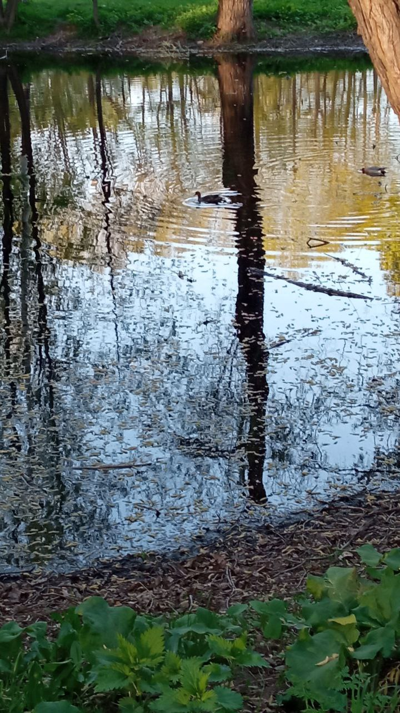

第 18 章
网中的邻居
俯瞰城区植被覆盖图，绿色斑块沿河流零星分布开来，宛如一次未竟的着色尝试。较大的几处是公园与植物园，较小者则点缀于居民区与校园之间，最细微的是行道树，在图例中几乎无法标注。这些零散绿

意构成了鸟类在城市中的关键栖息地。
它们被灰色道路和建筑分隔，又被鸟类飞行和人类步行的路径部分连接起来。
从这张图上看，河流是一条重要的线。它自西向东穿过城市，在几个转弯处留下了稍宽的河岸绿地，然后继续切入密集的建筑区。
它不是连续的生境廊道，很多地方的水泥堤岸把水陆交界处的植被压成一条窄缝。但鸟会利用它航行、停降、觅食。
沿河飞行的鸟可以避开大部分街区，却也暴露在另一些风险里：路灯、桥梁、岸边的玻璃护栏，以及夜间依然通明的办公楼群。
在河流南岸两条主干道的交汇处，有一块约两公顷的三角形绿地。图上的编号是“翠苑社区公园”，附近居民只叫它“那个小公园”。它太小，小到放在整张城区图里只是一个浅绿色的点。
但若把视线落到这个点上，再放大周围一平方公里的范围，能看见它处在几种城市压力交错的位置：北面是老式多层住宅区，常有人投喂猫，流浪猫从围墙破洞进出公园；东面是六栋十八层的住宅塔楼，玻璃窗反光强烈；南面是一栋保险公司的办公楼，朝公园的一面几乎全是玻璃幕墙；西侧是四车道主干道，车流声日夜不断。
上一章留下的问题就嵌在这个小公园里。公园北端靠围墙的柳树上，挂着一个人工巢箱，两年前由林业部门悬挂，几个月后被八哥占据。八哥用嘴扩大了洞口，叼进草茎和塑料碎片，把它改建成了一处繁殖巢。这个巢箱是干预悖论的一个具体注脚：善意设计的巢址，最终服务的并非预设对象，而是一个适应能力更强的广适物种。
从巢箱开始往周围看，就能看见不同鸟类如何在同一片空间里各自应付同一套压力。
春天的上午，白头鹎在东南角的樱花树上啄食残果。花已经过了盛期，枝条上挂着的果实成熟不均，深红色，小而密。白头鹎站在高处的细枝上，每吞下一颗就抖一次尾羽，偶尔发出短促的联系叫声。
这棵樱花树是十五年前园林部门种植的观赏树种，果实对白头鹎来说却是重要的春季食物。白头鹎的城市食谱里有相当大一部分来自这类园林植物：樱花、女贞、火棘、南天竹。它们被选种不是因为对鸟有益，而是因为好看、耐修剪、少病害，但果实确实为白头鹎提供了秋冬春三季的补充食物。
这只白头鹎站得很高。灌丛底部的叶子上留着猫的气味，是清晨一只橘猫穿过小叶女贞时留下的。猫此刻不在，但它的活动路线固定：从小区围墙的破洞进入，沿灌丛根部的土径穿过，到西侧的垃圾桶边停一会儿。白头鹎看不见灌丛底部的痕迹，却并不完全不知道风险存在。它选择高枝外端啄食，不在浓密的树冠内部久停，这些决定里包含着对地面天敌的响应。
捕食者并不需要直接出现，它的气味、路线、存在概率就足以改变猎物的空间选择。生态学里把这种效应称为“恐惧景观”，它造成的行为改变，比直接的捕杀范围更大。公园中部的草坪上，一只乌鸫在啄食蚯蚓。
它小跑几步，停下，歪头，用听觉定位地下猎物的微弱移动，然后猛地扎下喙，拔出一条扭动的蚯蚓。这块草坪的蚯蚓密度高，部分原因在于城市土壤被持续滋养：落叶被扫进树穴腐烂，草坪定期施肥，生活污水缓慢渗入土壤。乌鸫的好处直接来自这些人类活动。
但同一片草坪也在另一层压力之下。南面的办公楼玻璃幕墙映出天空和香樟树的倒影，从乌鸫的角度看去，那是一条通向另一片林地的通道。实际上那是一面硬墙。每年都有几只鸟撞上去，多在早晨光线的入射角制造出最深倒影的时候。
此刻没有鸟撞上玻璃。但乌鸫的巢就筑在附近的香樟树上，上一季的雏鸟在离巢后不久撞上了那面幕墙。
现在这一窝还没出巢。离巢后最初几天，幼鸟飞行能力差，对玻璃毫无辨别力，而亲鸟无法用任何行为把一面透明墙的威胁传给它。玻璃幕墙构成了一种代际无法传递的危险，它不同于自然栖息地中雏鸟能部分学会的障碍物，这块反光面在人造光环境里反复制造视觉假象。
同一片草坪上，离乌鸫不到十米，一群麻雀正啄食草籽和一个刚吃完早餐的人掉落的面包屑。它们不取蚯蚓，只利用地面上的颗粒食物。面包屑是精制碳水和油脂的混合物，热量高，但盐分对麻雀的肾脏是一种缓慢负担。
在这种环境里，高热量和高风险往往出现在同一口食物里。麻雀取的是一笔需要付出代价的贷款。它不会单次吃够，而是反复回到这些食物点，在更大的时间尺度上偿还代价，靠的是一年繁殖多窝、每窝多枚卵的数量策略。
旁边的一棵紫叶李上，珠颈斑鸠发出一串低沉的“咕咕——咕”。这个声音在路边六十多分贝的车流声里几乎听不见，办公楼空调外机的气流声也能轻易盖过。
但珠颈斑鸠并不依赖鸣声竞争领域。它的城市策略是高频次的繁殖尝试，一年可以开始四到五窝，单窝只产两枚卵，孵化期短，雏鸟离巢快。单次成功的概率不高，但次数充足，种群就可以维持甚至扩大。
这种策略也解释了它筑巢为何那么简陋：几根树枝架在树杈上就能下蛋，有的巢透光透风，站在地面能看到巢里的卵样。
它赌的不是一次完美，而是反复重来。靠近北端柳树的人工巢箱里，八哥探出身，从被它扩大的洞口飞出去，越过小区围墙，朝街对面的早餐店滑翔。八哥在城市里几乎什么洞都能住——树洞、墙洞、空调孔、排烟管、路灯底座。它不是一个挑食者，也不是一个挑剔的洞巢鸟。它对人工巢箱的利用方式很直接：改造洞口，填进能用的巢材，再用垃圾和塑料碎片加固。这个巢箱与它形成了一种宽松的匹配：不是为它而设，但并不妨碍它成为最有效的租客。
这一组行为在同一时段、同一块绿地里发生，表面上各自完成，互不干涉。白头鹎解决食物问题，乌鸫解决育雏前的能量积累，麻雀利用掉落食物，珠颈斑鸠维持繁殖节奏，八哥更新巢址的食物路线。
但把它们放进同一个小公园，就看见一层连接。食物资源的集中点是人为布置的：结果的樱花树、高蚯蚓密度的草坪、掉落的面包屑、早餐店垃圾桶。它们把不同物种吸引到同一批节点附近。猫也学会了在节点附近活动。投喂点养活了麻雀和珠颈斑鸠，也养活了猫。
猫在黎明和黄昏的捕猎峰期与这些鸟在地面觅食的时段重叠，对珠颈斑鸠这样的慢速起飞者尤其致命。其次，玻璃幕墙在食物最丰富的区域旁边形成反复出现的死亡风险。乌鸫需要草坪，但离草坪不远的反光墙是它进出领地必须穿越或避开的界面。
白头鹎在樱花树上吃了果实，然后飞到香樟树与其他个体会合。它的觅食不受猫的直接威胁，因为猫上不了那么高的细枝，但这种高枝取食行为本身是受限后的结果。如果灌丛边没有猫，白头鹎仍会频繁下来取食灌木果实。猫的存在没有直接把白头鹎赶出公园，却把它压到了一个更狭窄的取食层。
这个改变产生下一环的效应：过去三年里，随着猫在公园里的活动频率上升，草坪边的灌丛果实成熟后消耗变慢，女贞和小叶女贞的种子落地更多。第二年春天，灌丛区植物萌苗增加，但物业的除草作业又把它们清掉了。生态网络的波动并不总以鸟类为直接后果呈现，它有时会拐过几道弯，落到一丛灌木的命运上。如果把视线从这个公园拉高，再往城市尺度看，网络的形状更清楚。
白头鹎的扩散依赖城市绿化的果实供应。过去三十年里，它在中国城市的冬季分布线明显北移，北方城市的园林浆果和观赏树种子支撑了越冬种群。
但城市绿化本身是断裂的。公园之间、小区之间，大多是单排行道树，灌木层缺失，车辆噪音高，夜间光照强。
白头鹎的年轻个体在离巢后需要寻找新栖息地，不得不穿越这些脆弱的连接带。穿越成功的个体建立起新的领地，失败的个体则在途中消失。这种扩散的过程，既是白头鹎城市扩张的动力，也是筛选的一部分。年复一年，那些最善于利用绿带、对车流和人群耐受力最强的个体，更有可能完成转移。
乌鸫的网络的节点则在草坪和路灯之间切换。城市里的蚯蚓密度并不均匀，只在那些施肥灌溉稳定的地方长得好。乌鸫的领域因此被压缩成几个密集的点，导致公园里繁殖密度高，竞争也强。路灯和建筑物照明把它清晨的活动起始时间提前了四五十分钟，繁殖启动也提前了一周以上。这听起来不大，但在春天，一周意味着昆虫羽化高峰还未到来。
雏鸟出壳时，天然昆虫食物不足，单次繁殖成功率降低。乌鸫的补偿是不停止第一次繁殖，而是在一个季节里多试几次。这带来了一个不易看见的改变：乌鸫成鸟的能量支出增加，整个繁殖季节拉长，个体的年存活率可能下降。它的种群未必缩小，但它的生命周期在光和食物的双重作用下被重新调整了。
红隼则把这个网络延伸到更高的地方。城市的建筑立面替代了它原本使用的悬崖。它把卵产在空调外机平台或窗台凹陷处，对着几条街外的车流与人群。雏鸟在巢里成长时，食物问题一般可以解决，因为城市鼠类和麻雀、斑鸠等猎物充足。
到离巢期，风险突然上升。自然悬崖下通常有突出的岩台或斜坡，幼鸟飞不好可以中途停住，再试一次。建筑外墙不同。十五楼窗台下若没有凸檐，第一飞行时若高度测不准，等待它的可能是持续下坠。相邻楼宇的玻璃反弹天空，又制造新的碰撞界面。这些失败者通常不会被公园的清晨散步者看到，它们掉在建筑底部的排烟井旁、地下车库出入口或雨棚上，直到保洁员清走。
城市红隼面对的是一种新的离巢筛选，它的残酷性在个体身上体现得最直接。
回到“城市对鸟类到底意味着什么”这个问题。有一种说法认为，城市鸟类只是边缘物种在碎片化环境里的被动残存。它们依赖人类投喂、垃圾和零星植被存活，这些补贴一旦中断，种群就会崩溃；所以眼前的繁荣不过是灭绝前的虚假黎明。
这个看法并不全错，它抓住了城市栖息地对人类供给的依赖。但它漏掉的部分更大：被称作补贴的资源，并不是均等地发放给所有物种，而是如同一套带有强烈偏好的筛选程序。投喂点和食物垃圾优先惠及地面觅食、杂食或食谷的麻雀、珠颈斑鸠、八哥；园林果实惠及能消化植物果实、不怕人群的白头鹎；高密度草坪蚯蚓惠及用听觉定位土中猎物的乌鸫；建筑洞隙惠及次级洞巢和岩栖型鸟类。
这些资源又把天敌引到同一节点，把鸟类暴露在玻璃幕墙和光污染里。城市没有提供一个安全的逃避所，也没有提供一个纯粹的灭绝工厂，它提供的是一组前所未有的选择压力组合。这些压力强大、方向新、互相嵌套。
它们筛选的是行为灵活性、生理耐受范围、繁殖调节能力和对风险环境的学习速度。麻雀调整觅食地点和人类食物依赖，白头鹎调整取食高度和扩散路线，乌鸫调整繁殖次数和夜间活动节律，珠颈斑鸠维持高频繁殖但放宽对巢址的安全要求，八哥把一切洞和一切食物变成机会，红隼把建筑当作悬崖但必须支付雏鸟坠亡的代价。物种间的差异不再是简单的优与劣，而是不同答案在同一张考卷上的得分分布。
回到翠苑公园。这个春天的上午在鸟类的日常里没有留下戏剧性的痕迹。猫没有出现，玻璃上没有新的撞击痕迹，雏鸟还没离巢，八哥在早餐店垃圾桶边吃饱了又飞回巢箱。午间，太阳直射到幕墙时，倒影变浅，通道幻觉减弱。乌鸫回到香樟树的阴影里整理羽毛。珠颈斑鸠停在围墙上，偶尔俯身啄食几粒被风带上去的草籽。麻雀成群飞到北面小区阳台边的晾衣绳上，又落回地面寻找新的碎屑。白头鹎离开樱花树，往东边塔楼间的绿化带飞去，那是另一个比这里更小的绿地节点。但不可见的部分始终存在。猫的气味在灌丛叶子上持续挥发。
从翠苑公园西侧的铁栅栏望出去，越过四车道，主干道外缘的河岸上，两只喜鹊正在法桐的树冠间修巢。它们没有进到公园内部，巢离公园北侧围墙大约六十米，但树枝从早餐店后厨的堆物区取来，塑料打包带、纸套和几根褪色的布条交错在树枝之间。车流经过时，巢的外沿会微微震颤，但这对喜鹊并不构成直接警告；它们连续第二年使用这处巢址，已经适应了持续的低频噪声。
喜鹊与公园里的八哥形成一种松散的空间划分：八哥占据北端的人工巢箱和街对面早餐店的垃圾点，喜鹊占据河岸法桐和附近两处垃圾桶。两个物种都依赖人类食物链的下端，却一个偏向洞巢和封闭洞隙，一个偏向树冠开放巢和地面翻找。它们在某些节点上共享资源，又不完全重叠，竞争和互补同时发生。喜鹊翻起的腐殖土偶尔使蚯蚓短暂暴露，会吸引乌鸫靠近几米，但鸟之间保持着紧张的距离；乌鸫不愿在地面与喜鹊正面对峙，喜鹊也不愿为蚯蚓离开更安全的近巢区。这种细小的空间调节，在公园内外每天都在发生。
河岸上，夜鹭仍停在离水面最近的那枝旱柳上。白天它几乎不动，灰蓝的羽衣与树皮色融为一体，只有幼年期飞羽间几根白色细纹在逆光里发亮。夜间它下到河闸下方的浅湾，那里的水流被闸墩减速，路灯的黄光从岸边斜射到水面上，微虫和小鱼向光聚集，夜鹭便沿着光斑边缘捕食。这个取食点并不算自然生境，它依赖闸坝、定时光照和水流改变。
夜鹭没有进入翠苑公园，但它的存在说明，河岸绿地与公园绿地之间虽然隔着四车道，飞行路径和资源溢出仍把它们连在一起。在广东新会的小鸟天堂，灰鹭（俗称夜游）与白鹭（又名“鹭鸶”）等鹭鸟发展出精确的时间分工：白鹭朝出晚归，灰鹭则暮出晨归。每天傍晚7时15分至7时45分（冬季提前一小时），灰鹭中经验丰富的领头鸟发出信号，群鸟响应，聚集成群，列队飞出，人称“百鸟归巢”，实为“百鸟出巢”，此时灰鹭才暮出觅食。
第二天清晨5时15分至6时许，灰鹭经过一夜辛劳，满载而归，纷纷飞回，此谓之真正的“百鸟归巢”，每日周而复始，时间算得相当准确，风雨不改。这种基于晨昏节律的集体行动，是鸟类在特定环境中演化出的时间生态位分化策略。白头鹎向东飞越塔楼间隙时，偶尔会先沿河岸绕行，尤其在清晨逆光增强玻璃倒影的时段。
河岸那一排行道树于是不只是景观条纹，而成了一条避险飞行通道。主干道车流形成的气流和噪声在树冠层形成一道无形的墙，喜鹊和夜鹭各自贴在墙的两侧生活：喜鹊靠近垃圾与巢材，夜鹭靠近水流与光照。它们的作息因这条线错开，却都借助同一条河岸觅食、停歇和通行。
这片相邻的节点并不总是同时启动。早晨六点半到七点半之间，夜鹭尚未进入浅湾，猫的路线仍在灌丛底部，乌鸫已在草坪上往返，八哥飞向早餐店后门，喜鹊翻找垃圾桶，珠颈斑鸠停在围墙上等待阳光把地面晒暖。它们被压缩在同一个交通早高峰的阴影里，彼此不直接接触，却通过食物残渣、蚯蚓密度和地面安全程度相互影响。
喜鹊翻开草皮，蚯蚓暴露，可能短暂吸引乌鸫；乌鸫放弃一块被猫气味标记严重的草地后，喜鹊仍能在那里翻找，因为喜鹊对地面猫的警觉距离不同，体型更大，起飞更快。这样，一些边缘资源在物种间形成不完全重叠的利用链。
谁先到达、谁避开哪个时辰、谁承担更高的捕食风险，决定了当天能量收入的分配。小公园的鸟群因此不是同一张时间表上的演员，而是在城市基础设施的节律里各自校准。喷灌时间、垃圾桶清理、路灯熄灭、保洁员清扫、早高峰车流，都已变成比日出日落更细密的调度信号。
小公园之所以显得平静，不是因为压力不存在，而是因为众多的鸟把压力分散到了不同的微生态位上，把这块三角形绿地变成了一个多线程生存现场。同一块三角形绿地由此被压缩出一层层平行的取食窗口和风险窗口，彼此错开，又彼此依赖。
幕墙在早晨六点半到八点之间的倒影最逼真，而那正是鸟最活跃的时段。草坪上的蚯蚓仍在土壤表层活动，吸引乌鸫反复返回同一块区域。巢箱里的八哥已经进入交配期，雌鸟在洞里，雄鸟在洞口和街道之间往返。这个公园像一个被拉伸的节点，每一根线都通往它的鸟，每一根线也通往它的风险。
公园的记录本上，过去一年共记录到鸟类三十余种，十年前的这个数字是三十六七种。消失的几种是春秋过境的莺类和小型鸫类，不在公园繁殖，只在迁徙时短暂停过几日。它们不再出现的原因无法单凭公园内的资料判断。可能的因素来自整条迁徙路线，来自沿途歇脚绿地被不断蚕食，也来自城市夜间光环境对迁徙导航的干扰。
这一年中，物业清理了因撞上办公楼幕墙而死亡的鸟类一十九只，其中多为白头鹎和乌鸫；因猫捕食死亡的鸟类十四五只，珠颈斑鸠和麻雀最多。这些数字小到不足以在公园尺度上造成种群崩溃，却大到足以让人看见一个持续收窄的筛孔。
十年前，没有人会把这座街角小公园的命运与整个城区的绿化规划、流浪猫种群和建筑节能标准放在一起考虑。现在却很难再把它看作一个孤立的角落。每一条渗入这个小绿地的压力线，都在其他地方同样存在。它们连接的不是某一个物种的个案，而是一套分布在整个城市肌理中的生态过滤网络。高处看下去，那些绿色碎块是分散的；落到地面就会看见，它们从来不是孤岛。